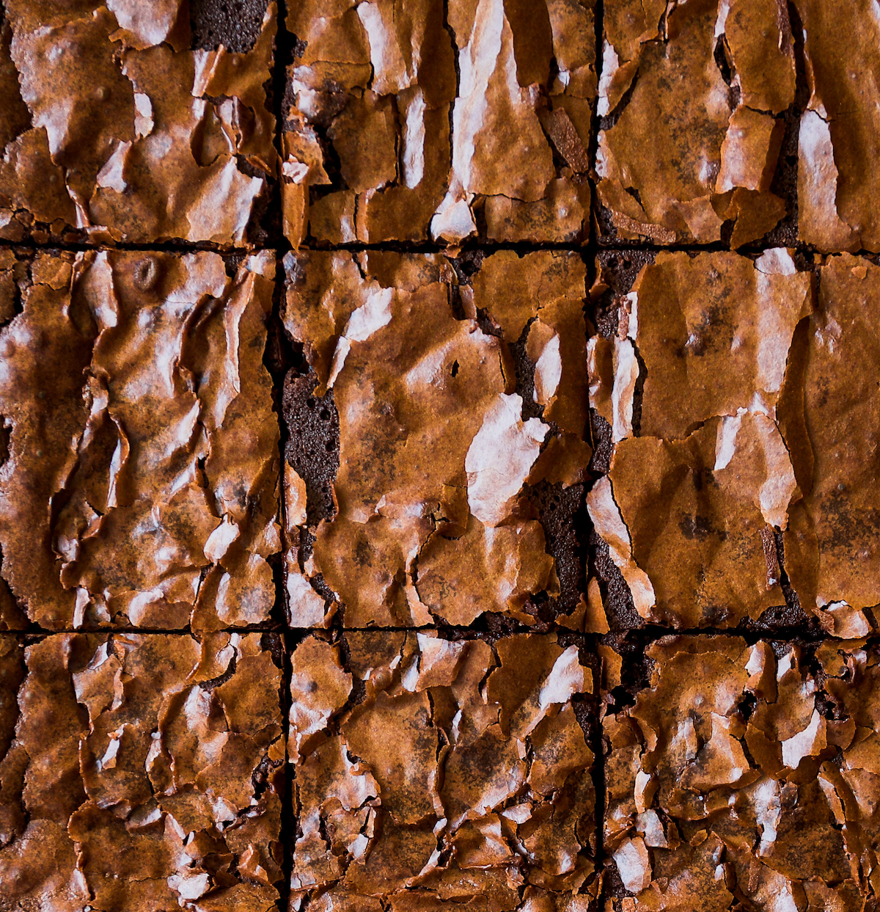

Brownies

Description
This recipe yields about four servings of delicious, fudgy brownies with a crackly top. For the best results, instructions should be followed carefully!
Ingredients
- 80g all-purpose flour
- 200g granulated sugar
- 142g unsalted butter, softened
- 198g melted dark chocolate
- 1 tbsp cocoa powder
- 1/2 tbsp espresso powder
- 1 tsp warm water
- 2 large eggs
Instructions
- In a deep mixing bowl, cream butter and sugar with an electric mixer until the mixture is pale and fluffy (5-6 minutes).
- Add the eggs and vanilla and mix again for another 5 minutes.
- In a small bowl, mix together the espresso powder and water, then whisk into batter.
- Mix in the melted chocolate.
- In a seperate bowl, whisk the flour and cocoa powder.
- Add the dry ingredients into the mixture and mix until just combined.
- Pour batter into a square pan that's lined with parchment paper and use a spatula to spread it evenly across the pan.
- Bake at 177 C for 35-40 or until an inserted toothpick comes out covered in sticky crumbs.
- Let the brownies cool slightly, then cut into square pieces and serve warm with ice-cream. Enjoy!